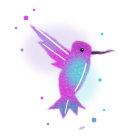
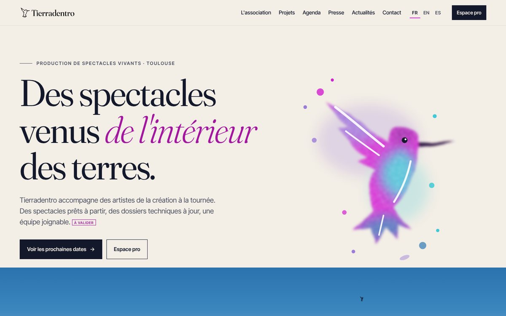
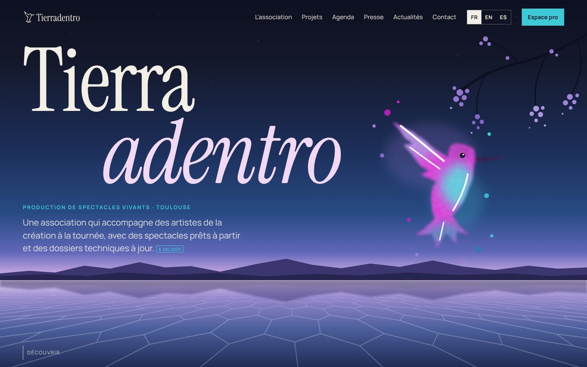

Phase 0 : direction artistique
Deux propositions de page d'accueil, le colibri au trait et deux paires typographiques. Les textes marqués À valider sont provisoires. Rien n'a été inventé : ni citation, ni partenaire, ni chiffre hors de l'historique des dates.

À arbitrer Une réponse par question suffit
- Quelle maquette ?A « Salar » (clair, éditorial) ou B « Nuit » (immersif, plus spectaculaire). On peut aussi mélanger : par exemple le héros de B et l'agenda de A.
- Quelle paire typographique ?A : Fraunces + Inter Tight. B : Instrument Serif + Manrope. Le bouton « Typo » en bas de chaque maquette permet d'essayer l'autre paire.
- Le colibri au trait vous convient ?Redessiné d'après l'aquarelle des captures : vertical, tourné vers la droite, aile levée, queue en éventail. Dites-moi si la silhouette est à revoir.
Structure retenue docs/decisions.md
Le site présente une liste plate de projets. Le Cuarteto Tafi est l'un d'eux, au même niveau que Des espoirs plein le corps, La voix des femmes d'Amérique latine, La Noche Eterna et Nosotras. La navigation propose « Projets » à la place de « Artistes » et « Spectacles ». Les musiciens et danseurs sont listés dans chaque projet et peuvent apparaître dans plusieurs.
Maquettes de la page d'accueil Ordinateur et mobile

A · Salar
Fond sable, grande typographie éditoriale, le salar en panorama sous le titre (sable chaud, nuages bas, jacaranda isolé). Agenda en liste, projets en index. Sobre et « institution culturelle ».
Ouvrir la maquette A
B · Nuit sur le salar
Héros plein écran au crépuscule : ciel profond, jacaranda, reflet sur le sel. Dates en billets, projets en aplats de couleur, tableau des documents pro.
Ouvrir la maquette BLogo : le colibri au trait Fichiers SVG dans assets/
Un seul tracé fermé, sans détail superflu, pour rester lisible en 24 px. Le mot « Tierradentro » est converti en tracés : le SVG s'affiche partout, sans police installée. Droits du colibri : à confirmer avec l'illustrateur ou l'illustratrice avant la mise en ligne. Un emplacement de crédit est prévu en pied de page.
Palette affinée Contraste vérifié (AA = 4,5:1 pour le texte courant)
Les teintes d'origine restent la signature visuelle (aplats, grands titres, illustrations). Pour le texte courant, on utilise une variante plus foncée de la même teinte.
Typographies Planche comparative
Les deux paires composent les mêmes textes côte à côte : titres, texte courant, dates et caractères espagnols (ñ, ¿, ¡, accents). Les quatre polices sont libres (licence SIL OFL) et hébergées avec le site, comme le prévoit le brief.
Ce qui manque encore Emplacements prévus, rien ne bloque
- Aquarelle originale du colibri et ses droitsLe colibri couleur est une évocation provisoire en SVG.
- Photos du quartet et des spectaclesDes emplacements sont prévus, avec crédit photo obligatoire.
- Identifiants YouTube des clipsLe lecteur est prêt et ne charge rien avant le clic.
- Projet de chaque date à venirLe CSV ne le précise pas : ces dates sont rattachées au Cuarteto Tafi.
- Identité légale et contacts nommésSIRET, licence, statut TVA, adresse, téléphones.
- Distribution de chaque projetQui joue dans Des espoirs plein le corps et La voix des femmes d'Amérique latine : à valider.
- Contenu de La Noche EternaUne annonce sobre est affichée en attendant.
- Logos partenairesLe bandeau reste masqué tant qu'il est vide.